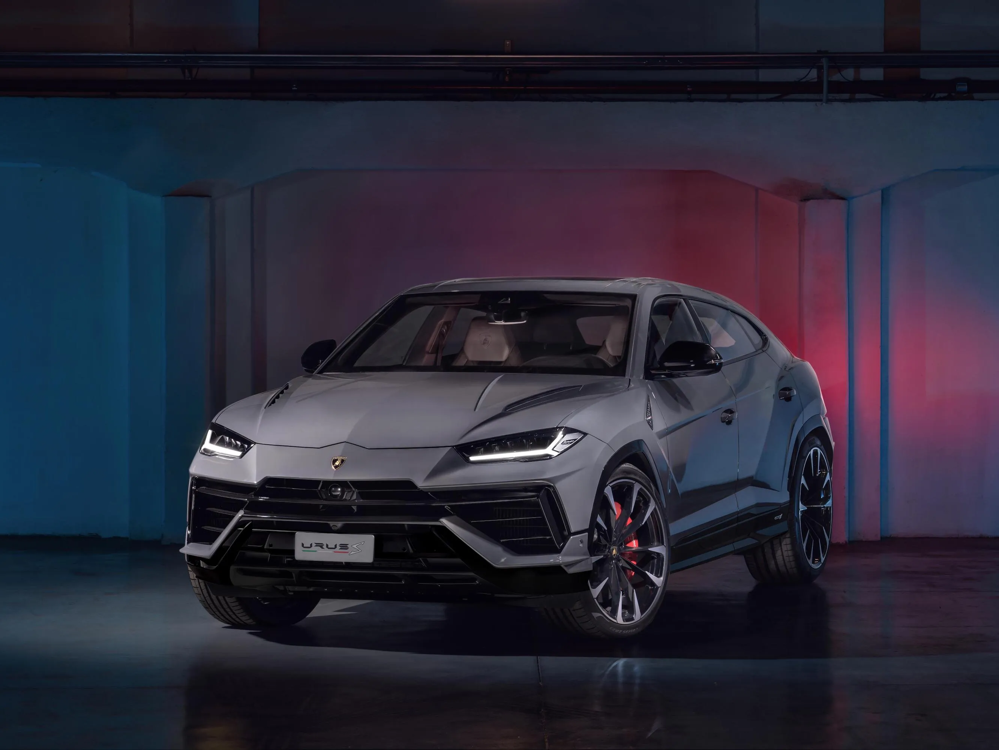
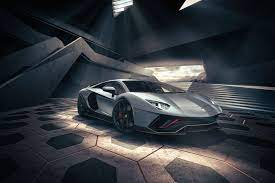
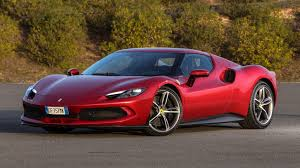
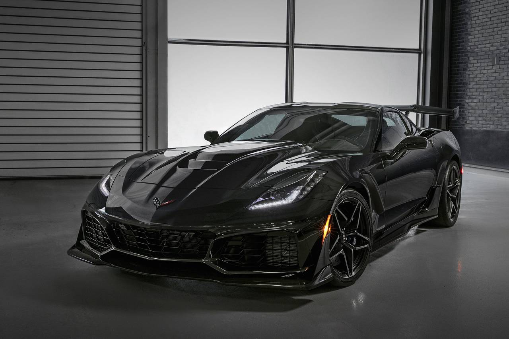

Supercars




Lamborghini
Ferruccio Lamborghini und Enzo Ferrari
1963 gründete Ferruccio Lamborghini die Firma Automobili Lamborghini, als Markensymbol wählte er Murciélago, den legendären Stier, der am 5. Oktober 1879 einen Stierkampf mit 24 Lanzenstößen überlebte und daraufhin begnadigt wurde, als Symbol für Stärke; außerdem war der Stier sein Sternzeichen. Ab diesem Jahr wird mit der Entwicklung von Sportwagen begonnen.
Die Entscheidung dazu fiel einer weit verbreiteten Legende zufolge nach einer Auseinandersetzung zwischen dem Sportwagen-Liebhaber Ferruccio Lamborghini und Enzo Ferrari. Lamborghini hatte häufig Probleme mit seinem Ferrari und beschwerte sich bei Firmenchef Enzo Ferrari. Dieser antwortete, Lamborghini könne nur Traktoren richtig bauen und keine Sportwagen, worauf Lamborghini seinem Widersacher das Gegenteil beweisen wollte und einen schnelleren Sportwagen baute.[4] Nach anderen Quellen soll sich Enzo Ferrari geweigert haben, einen Sportwagen nach Lamborghinis Vorstellungen zu bauen[5] oder Ferruccio Lamborghini zu einem Gespräch zu empfangen.[6] Der Wahrheitsgehalt dieser Geschichten wird allerdings vielfach bezweifelt. Nach anderen Darstellungen habe Ferruccio Lamborghini Enzo Ferrari nie persönlich kennengelernt und die Sportwagenproduktion in erster Linie aufgenommen, um seinen Traktorbetrieb zu bewerben.[7]
1998 übernahm die Volkswagen-Tochter Audi AG das Unternehmen und ist bis heute Eigentümerin. Seitdem bietet Lamborghini wieder eine breitere Modellpalette an und zeigt wieder eine große Anzahl an Studien und Kleinstserienfahrzeugen. Mit dem etwa drei Millionen Euro kostenden Kleinseriensportwagen Veneno präsentierte Lamborghini auf dem Genfer Auto-Salon 2013 das damals teuerste straßentaugliche Serienauto der Welt.[8][9]
Im September 2000 wurde zusätzlich die Volkswagen Group Italia S.p.A. zu 100 % in die Automobili Lamborghini Holding S.p.A. integriert.[10] Sie fungiert als Generalimporteur für die Marken Audi, SEAT, Škoda, Volkswagen Pkw und Volkswagen Nutzfahrzeuge in Italien.
Lambo-Kosten
Ein Lamborghini ist ein High-End-Sportwagen, der in der Regel neu mehr als 200.000 Euro kostet. Der Lamborghini Huracán 2022 beginnt zum Beispiel bei 190.000 Euro, während der Lamborghini Aventador 2022 bei mindestens 320.000 Euro liegt.
as gilt mittlerweile auch für den Lamborghini Countach. Um 216 Prozent kletterte sein Wert seit 2011. Auch ist offenbar eine teuflisch gute Wertanlage, zuletzt lagen die Durchschnittspreise bei mehr als 300.000 Euro.
Ferrari
Die Ursprünge des Unternehmens gehen zurück auf das Rennteam Scuderia Ferrari, das von 1929 bis 1938 unter der Leitung von Enzo Ferrari unter anderem als Werksteam von Alfa Romeo sehr erfolgreich Autorennen fuhr, ohne selbst Fahrzeuge zu bauen. Schon zu diesen Zeiten wurde das heute noch benutzte Logo verwendet: ein sich aufbäumendes Pferd, das cavallino rampante.
Die Ursprünge des Unternehmens gehen zurück auf das Rennteam Scuderia Ferrari, das von 1929 bis 1938 unter der Leitung von Enzo Ferrari unter anderem als Werksteam von Alfa Romeo sehr erfolgreich Autorennen fuhr, ohne selbst Fahrzeuge zu bauen. Schon zu diesen Zeiten wurde das heute noch benutzte Logo verwendet: ein sich aufbäumendes Pferd, das cavallino rampante.
Ferrari-Zentrale in Maranello
Ferrari-Werke in Maranello
1940 wurde die Scuderia in „Auto Avio Costruzioni Ferrari“ umbenannt und zog 1943 nach Maranello um, wo sie bis heute ihren Hauptsitz hat. Die Fabrik wurde 1944 durch einen Bombenangriff zerstört und 1946 wieder aufgebaut.
Der erste „echte“ Ferrari war der 1947 gebaute Ferrari 125 C Sport mit einem 1,5-Liter-V12-Motor. Ferrari baute damals in erster Linie Rennwagen für Sportwagenrennen wie die Mille Miglia, die auch an Kunden verkauft wurden, um Geld zu verdienen.
Daraus entwickelten sich Straßenwagen, die nicht für den Renneinsatz geeignet waren. Für außergewöhnliches Styling aus dem Haus Pininfarina bekannt, sind und waren die Autos von Ferrari beliebt bei den 'Reichen und Schönen'. Neben Pininfarina wurden auch Scaglietti, Bertone und Vignale mit dem Design von Ferraris beauftragt.
Corvette
Benannt wurde die Corvette nach dem kleinen, wendigen Kriegsschiff. Gemäß einer Legende wurde für den neuen Sportwagen von General Motors ein Name gesucht, bis ein Mitarbeiter auf diesen Namen kam, während er in einem Wörterbuch suchte.
Der erste Entwurf des Corvette-Logos von Robert Bartholomew enthielt noch die US-amerikanische Flagge auf der linken Seite und die karierte Flagge auf der rechten Seite. Dieses Logo sollte auf der ersten Corvette 1953 erscheinen, wurde aber vier Tage vor der Präsentation wieder verworfen, da die Darstellung der amerikanischen Flagge auf einem kommerziellen Produkt nicht erlaubt war. Daher wurde stattdessen eine Flagge mit dem Chevrolet-Logo und der Fleur-de-Lis verwendet. Die stilisierte Schwertlilie (Fleur-de-Lis) wurde gewählt, da sie unter anderem für Reinheit steht und der Name Chevrolet französischsprachigen Ursprungs ist.
Bis heute wurde das Logo weiterentwickelt. So wurde die Anordnung der Flaggen gewechselt, und einige Farben wandelten sich mit der Zeit. Waren die beiden Flaggen am Anfang noch in ein kreisrundes Emblem eingebettet, so traten sie immer weiter in den Vordergrund und stehen heute ohne jede Umrandung oder Beiwerk.
Die Entstehung der Corvette
Anfang der 1950er-Jahre waren europäische Sportwagen in den USA sehr populär, was zur Entwicklung eines nationalen Sportwagens für die neu gebauten Interstate-Highways führte. Während General-Motors-Chefdesigner Harley Earl im September 1951 ein Sportwagenrennen in Watkins Glen im Bundesstaat New York besuchte, kam ihm die Idee zum Bau eines solchen Fahrzeugs. Es war ein Jaguar, der ihn zur Entwicklung der Corvette inspirierte: Der futuristisch gezeichnete Sportwagen Jaguar XK 120 mit Aluminiumkarosserie sorgte auf Anhieb für Furore und begeisterte unter anderem auch Hollywood-Filmstars.
Im Jahre 1952 schlug deshalb Harley Earl vor, einen offenen Zweisitzer mit einer Karosserie aus glasfaserverstärktem Kunststoff[1] anzubieten. Am 2. Juni 1952 erlaubte der General-Motors-Präsident Harlow Curtice den Bau eines Prototyps; somit war die Entscheidung, einen Sportwagen zu bauen gefallen. Harley Earl stellte deshalb einen Jaguar XK 120 als Inspirationshilfe ins GM-Studio und ließ ein erstes zweisitziges Konzeptfahrzeug bauen. Das Projekt lief unter dem Codenamen „Opel“ – 15 Jahre später sollte die Corvette wiederum die Entwicklung des Opel GT initiieren. Chevrolet-Chefingenieur Ed Cole, zusammen mit Harley Earl geistiger Vater der Corvette, erhielt im Juli 1953 kompetente Verstärkung: Zora Arkus-Duntov, ein damals junger, rennsportbegeisterter Ingenieur kam zu General Motors. Auch Duntov wird später als „Vater der Corvette“ bezeichnet, da er nicht nur am Erfolg der C1 entscheidend beteiligt war.
Die erste Corvette C1 hatte einen 3,8-Liter-R6-Motor mit einer Leistung von 114 kW (155 PS). Die Corvette wurde jedoch erst erfolgreich, als der Chef-Techniker 1957 anordnete (der junge Ingenieur hatte erst zwei Jahre zuvor seine Arbeit bei General Motors begonnen), dass die Corvette einen Small-Block-V8-Motor erhalten soll. Dieser sogenannte Small-Block wird bis heute in jede Corvette eingebaut.
Keine der ersten drei Generationen hielt den Ansprüchen der damaligen deutschen Autotester stand. „Schein-Sportwagen“ meinte die Welt am Sonntag in ihrem Test der Corvette C3 vor fast dreißig Jahren, Tester Hans Werner Loose berichtete von „einem Fahrverhalten wie ein Känguru“ auf welliger Fahrbahn und klagte über die schlechte Federung.
Erst seit der Corvette C4 ZR-1 und spätestens seit der C5 wird die Corvette auch in Europa als ernstzunehmender Sportwagen angesehen. In der Tat gewann die Corvette in dieser Hinsicht erst mit der fünften Generation deutlich an Boden. Seit deren Erscheinen im Jahr 1997 wurden Erfolge gegen die europäischen Konkurrenten auf der Rennstrecke erzielt: Fünf Siege in der Gruppe GT1 beim 24-Stunden-Rennen von Le Mans und der Gewinn der Gruppe GT3 stehen für die Corvette zu Buche.
Diese Erfolge im Rennsport trugen ebenfalls zum Erfolg und Beliebtheit bei. Die Corvette gilt aber seit der ersten C1 bis heute zur aktuellen C8 als ein Sportwagen mit einem sehr guten Preis-Leistungs-Verhältnis.